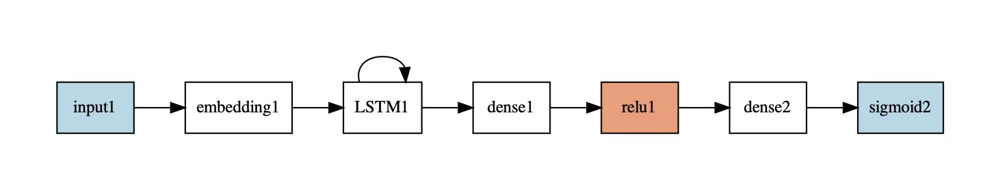

Training a LSTM¶
This example trains and evaluates an Embedding and LSTM using IMBD dataset. [source]
#include <cstdio>
#include <cstdlib>
#include <iostream>
#include "eddl/apis/eddl.h"
using namespace eddl;
//////////////////////////////////
// Embeding+LSTM
// using imdb preprocessed from keras
// 2000 words
//////////////////////////////////
int main(int argc, char **argv) {
// Download Imdb
download_imdb_2000();
// Settings
int epochs = 10;
int batch_size = 32;
int length=250;
int embdim=32;
int vocsize=2000;
// Define network
layer in = Input({1}); //1 word
layer l = in;
layer lE = RandomUniform(Embedding(l, vocsize, 1,embdim),-0.05,0.05);
l = LSTM(lE,32);
l = ReLu(Dense(l,256));
layer out = Sigmoid(Dense(l, 1));
model net = Model({in}, {out});
// dot from graphviz should be installed:
plot(net, "model.pdf");
optimizer opt=adam(0.001);
//opt->set_clip_val(0.01);
// Build model
build(net,
opt, // Optimizer
{"binary_cross_entropy"}, // Losses
{"binary_accuracy"}, // Metrics
CS_GPU({1}) // one GPU
//CS_GPU({1,1},100) // two GPU with weight sync every 100 batches
// CS_CPU()
);
// View model
summary(net);
// Load dataset
Tensor* x_train=Tensor::load("imdb_2000_trX.bin");
Tensor* y_train=Tensor::load("imdb_2000_trY.bin");
Tensor* x_test=Tensor::load("imdb_2000_tsX.bin");
Tensor* y_test=Tensor::load("imdb_2000_tsY.bin");
x_train->reshape_({x_train->shape[0],length,1}); //batch x timesteps x input_dim
x_test->reshape_({x_test->shape[0],length,1}); //batch x timesteps x input_dim
y_train->reshape_({y_train->shape[0],1,1}); //batch x timesteps x input_dim
y_test->reshape_({y_test->shape[0],1,1}); //batch x timesteps x input_dim
// Train model
for(int i=0;i<epochs;i++) {
fit(net, {x_train}, {y_train}, batch_size, 1);
//evaluate(net,{x_test},{y_test});
}
}